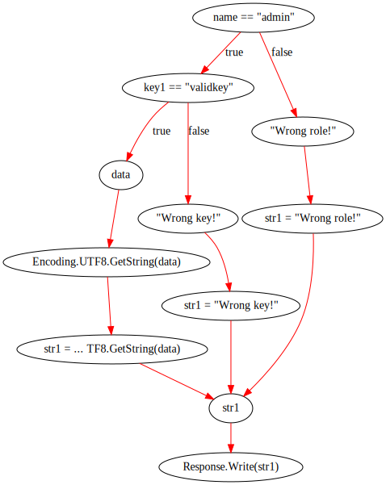

<!doctype html>
<html lang="en">
    <head>
        <meta charset="utf-8">
        <title>Source code analyzers: how generalizable are they?</title>
        <link rel="stylesheet" href="css/reveal.css">
        <link rel="stylesheet" href="css/theme/white.css" id="theme">
        <link rel="icon" href="favicon.ico" type="image/x-icon" />
       
        <!-- For syntax highlighting -->
        <link rel="stylesheet" href="lib/css/default.css">

        

        <!-- If the query includes 'print-pdf', use the PDF print sheet -->
        <script>
          document.write( '<link rel="stylesheet" href="css/print/' + ( window.location.search.match( /print-pdf/gi ) ? 'pdf' : 'paper' ) + '.css" type="text/css" media="print">' );
        </script>

        <style type="text/css">
            @page {    
              margin: 0;
              size: auto; 
            }
        </style>

        <script>
         if(window.location.search.match( /print-pdf-now/gi )) {
           window.print();
         }
      </script>

    </head>
    <body>

        <div class="reveal">
            <div class="slides"><section  data-markdown><script type="text/template">
<script src="highlightjs-line-numbers.min.js">__SCRIPT_END__
<link href="pdug-begin.png">
<link href="css/theme/black.css">
<link href="css/theme/white.css">
<link rel="icon" href="favicon.ico" type="image/x-icon" />

<style>
.reveal h1 {
    font-size: 1.3em;
    text-align: center
}
.reveal h2 {
    font-size: 1.2em;
    text-transform: none;
    text-align: center
}
.reveal h3 {
    font-size: 1.1em;
    text-transform: none;
    text-align: center
}
.reveal h4 {
    font-size: 1.0em;
    text-transform: none;
    text-align: left
}
.reveal section img {
    background: none;
    border: none;
    box-shadow: none;
    align: right;
}
.reveal .slides code:not([class]) {
    background: rgba(27,31,35,0.05);
    font-family: consolas;
}
.common-tokens {
    background-color: #ffff00
}
.island-tokens {
    background-color: #cccccc
}
.good-tokens {
    background-color: #66ff66
}
.bad-tokens {
    background-color: #ff0000;
    color: #ffffff"
}
</style>

<!-- .slide: data-background="pdug-begin.png"; width="100%" style="text-align: left;" -->

<div style="position:absolute; left:45%; width: 65%; text-align: left; color: #ECE9D7; font-size: 1.25em;">

<br><br>
Source code analyzers:<br>how generalizable are they?

<br><br>

<div style="font-size: 0.8em;">

Ivan Kochurkin<br>

Positive Technologies<br>

Team Lead
</div>

<br>

<span style="position:absolute; left:-15%; top:95%; font-size: 0.5em;">
Theme: <a href="#" onclick="document.getElementById('theme').setAttribute('href','css/theme/white.css'); return false;">White</a> |
<a href="#" onclick="document.getElementById('theme').setAttribute('href','css/theme/black.css'); return false;">Black</a></span>

<span style="position:absolute; left:-15%; color: #ECE9D7; top:100%; font-size: 0.5em;">Slides: [kvanttt.github.io](https://kvanttt.github.io/)</span>

</div>
</script></section><section  data-markdown><script type="text/template">
# 📝 About me

* Ivan Kochurkin
* Team Lead at [Positive Technologies](https://www.ptsecurity.com/), Data Flow Source Code Analyzer
* Developer at [Swiftify](http://swiftify.io/), Objective-C → Swift Source Code Converter
* Active Contributor on GitHub: [KvanTTT](https://github.com/KvanTTT)
* Tech Article Writer at [habr.com](https://habr.com/users/kvanttt/) and other blogs

<aside class="notes">
Меня зовут Иван Кочуркин. В настоящий момент я работаю в Positive Technologies
над анализаторами исходных кодов.

Также я участвую развитии Swiftify, веб-сервисе по конвертации кода Objective-C
в Swift. Там я занимаюсь доработкой Objective-C грамматик, конвертером и
улучшением производительности.

Наконец, я веду активную деятельность на GitHub под ником KvanTTT и пишу статьи
на хабре на техническую тематику.
</aside>
</script></section><section  data-markdown><script type="text/template">
# 📋 Analyzer Types

1. Regular Expressions
2. Tokens
3. Parse Trees and AST
4. Data & Control Flow Graphs (DFG & CFG)
5. Binary | Intermediate Language

<aside class="notes">
Сначала разъясню название доклада: под обобщением подразумевается анализ
разных языков, таких как C#, Java, PHP, даже SQL диалектов с использованием
универсального представления.

Как вы считаете, возможно ли существование универсального анализатора кода?

* Поднимите руку, что считает что да?
* Поднимите руку, кто считает что нет?

Вижу есть и те, кто воздержался. Запомните ваши ответы, а в конце доклада мы
проголосуем вновь и посмотрим, поменялось ли ваше мнение. Надеюсь кто-то из вас
почувствует себя немного профессионалом и воздержавшихся станет меньше.

Для того, чтобы разобраться в этом вопросе, давайте разобьем модели исходного кода
на следующие типы: регулярные выражения, токены, деревья разбора
или абстрактные синтаксические деревья, графы потоков данных и управления, и,
наконец, бинарный язык или промежуточное представление. Каждая модель описывает определенные
свойства кода, которые не могут описывать другие модели.

Регулярные выражения вообще не требуют промежуточной модели, они
работают на тексте. Следующая модель оперирует уже линейной структурой, списком
токенов. Их уже необходимо унифицировать. Но это не так сложно сделать, как
унифицировать дерево разбора или абстрактное синтаксическое дерево, потому что
они являются иерархическими. А следующие структуры вообще графовые,
причем они содержат циклы, которые усложняют и увеличивают время анализатора.
Анализ бинарного представления требует чтобы код запускался на реальном окружении,
причем в контексте самой операционной системы.

В докладе я детально опишу эти представления, какие дефекты исходного кода с
помощью них можно находить в контексте ИБ, а также пофантазирую о том, как могли
бы выглядеть предметно-ориентированные языки под них, т.е. DSL. На DSL я
акцентирую внимание DSL, потому что они хорошо отображают сущности рассматриваемых моделей.
</aside>
</script></section><section  data-markdown><script type="text/template">
# ⏭️ Regular Expressions

1. `<table>(.*?)</table>`
2. Attributes? `<table.*?>(.*?)</table>`
3. Elements? `tr`, `td`
4. Comments? `<!-- html comment -->`
5. ...
6. [NO NOO̼O​O NΘ stop the an​*̶͑̾̾​̅ͫ͏̙̤g͇̫͛͆̾ͫ̑͆l͖͉̗̩̳̟̍ͫͥͨe̠̅s ͎a̧͈͖r̽̾̈́͒͑e n​ot rè̑ͧ̌aͨl̘̝̙̃ͤ͂̾̆ ZA̡͊͠͝LGΌ ISͮ̂҉̯͈͕̹̘̱ TO͇̹̺ͅƝ̴ȳ̳ TH̘Ë͖́̉ ͠P̯͍̭O̚​N̐Y̡ H̸̡̪̯ͨ͊̽̅̾̎Ȩ̬̩̾͛ͪ̈́̀́͘ ̶̧̨̱̹̭̯ͧ̾ͬC̷̙̲̝͖ͭ̏ͥͮ͟Oͮ͏̮̪̝͍M̲̖͊̒ͪͩͬ̚̚͜Ȇ̴̟̟͙̞ͩ͌͝S̨̥̫͎̭ͯ̿̔̀ͅ](https://stackoverflow.com/a/1732454/1046374)

<aside class="notes">
Итак, первый тип, регулярные выражения. Наверное, в этом зале все знают что это
такое и если их использовать для обработки реальных исходников, то можно вызывать
Ктулху и попасть в ад.

Рассмотрим регулярку с открывающим и закрывающим тегом table: `<table>(.*?)</table>`.
Данное выражение парсит не жадно текст до закрывающегося тега `</table>`.
Ок, все хорошо, все довольны. А что, если нужно добавить еще и обработку аттрибутов?
Ок, нет проблем используем из пункта 2: `<table.*?>(.*?)</table>`. А что если
дальше нужно добавить поддержку элементов `<tr>` и `<td>`, которые внутри себя
также могут содержать кучу тегов? Или, допустим, добавить поддержку комментариев
`<!-- html comment -->`. После определенного этапа вам не захочется вносить
изменения в это сложное регулярное выражение, и вы поймете, что здесь что-то не
так :)

Кстати, то же самое касается и парсинга любых языков, в котором есть вложенные
элементы, например простейшие блоки из фигурных скобок в C#.
</aside>
</script></section><section  data-markdown><script type="text/template">
# ㊙️ Regex DSL

* `[ ]` - Matches a single character that is contained within the brackets.
* `[^ ]` - Matches a single character that is not contained within the brackets.
* `?` - Optional symbol
* `*` - Zero or more occurrences. `ab*c` matches `ac`, `abc`, `abbc`
* `+` - One or more occurrences.
* `|` - Or. `gray|grey` can match `gray` or `grey`.

<aside class="notes">
Я думаю что ни для кого не секрет что из себя представляют DSL для регулярок.
Символы, которые нужно сматчить, задаются внутри квадратных скобок. Для того,
чтобы сделать отрицания - нужно использовать символ Карет или Циркумфлекс.
Чувствуйте, я уже произношу слова как из какого-то заклинания для вызова Ктулху?

Для выражений можно использовать разные квантификаторы, типа звездочки `*` или `+`,
которые обозначают ноль или один и больше повторов предыдущего выражения. Или,
например, можно использовать вертикальную палочку, которая обозначает выбор из
двух и более вариантов.

Регулярки в современных языках программирования обладают мощностью полноценных
языков благодаря обратным ссылкам и другим фичам. Однако описывать
ими конструкции с определенного этапа становится очень сложно.

Почему описание регулярных выражений и этот слайд здесь вообще существуют? Дело
в том, что последующие DSL являются надмножеством предыдущих и содержат
дополнительные синтаксические конструкции. Т.е. язык для универсальных токенов,
например, будет также в каком-то виде содержать повторы, другие операторы из
регулярных выражений.
</aside>
</script></section><section  data-markdown><script type="text/template">
# 🔲 Regex Patterns

| Advantages                   | Disadvantages                                            |
|------------------------------|----------------------------------------------------------|
| Very simple                  | Hard to support                                          |
| Formal model is not required | Generally not recursive                                  |
| Universal                    | Slow                                                     |
|                              | Hidden tokens (whitespaces, comments) cannot be skipped |

<aside class="notes">
Подводя итоги, можно сказать следующее:

Использовать их очень легко, для них даже не требуется никакого дополнительного
преобразования исходного кода.

Такая простота, однако, чревата большими сложностями при поиске чего-то менее
тривиального. Во-первых, регулярные выражения даже короткие тяжело воспринимать,
а большие - так вообще write-only.

Во-вторых, регулярки не подходят для парсинга рекурсивных структур, которыми,
например, являются открывающиеся и закрывающиеся фигурные скобки в языках
программирования, ну и другие структуры.

В-третьих, сложные регулярные выражения могут довольно долго отрабатывать, т.к. нужно
учитывать пробелы и другие незначимые символы. Кстати, это тоже является
проблемой, т.к. в регулярках нельзя просто взять и забить на проблемы, ой пробелы.
Если у вас между двумя строками есть пробелы, то надо их всегда указывать, например
`\s*`. Это также захламляет и без того сложное регулярное выражение.
</aside>
</script></section><section  data-markdown><script type="text/template">
# 🔲 Regex Patterns

* Floating Point Numbers: `[-+]?[0-9]*\.?[0-9]`
* 📧 Emails Addresses

  ```
  `\b[A-Z0-9._%+-]+@[A-Z0-9.-]+\.[A-Z]{2,}\b`
  ```

* IP Address Find | Validation

<aside class="notes">
На этом слайде показаны некоторые примеры регулярок. Простейшим является поиск
вещественных чисел.

Конечно же все наверное видели подобие регулярного выражения для парсинга
адресов электронной почты. В стандарте на самом деле оно выглядит куда более
громоздко, хотя и эта запись уже плохо читается. Надеюсь также все понимают,
что с помощью только регулярного выражения нельзя отвалидировать почту, потому
форматов очень много, у разных серверов разные ограничения. Так что самый
надежный способ проверить email - отправить тестовое письмо и удостовериться, что
оно дошло.

Также с помощью регулярок можно валидировать IP адреса, даты. Но даже такое
выражение для IP будет занимать слишком много места и, поверьте, здесь будет
лишним.
</aside>
</script></section><section  data-markdown><script type="text/template">
<link href="level-up.jpg">
<!-- .slide: data-background="level-up.jpg"; -->
</script></section><section  data-markdown><script type="text/template">
<!-- .slide: style="text-align: left;" -->

# ⏭️ Tokens

* Lexeme - Recognized char sequence
* Token = Lexeme + Type
* Grammar

    ```
    Keyword:    'var';
    Id:         [a-z]+;
    Digit:      [0-9]+;
    Comment:    '/*' .*? '*/';
    Semi:       ';';
    Whitespace: ' '+;
    ```
* Code Sample
    ```csharp
    var a = 17; /* comment */
    ```

<aside class="notes">
Проблему с комментариями можно решить если перейти на следующий уровень, в
котором анализатор оперирует уже не отдельными символами, а группами символов,
которые обозначают ключевые слова, числа, строки, пробелы и т.д. В этом случае
пробелы и комментарии можно сразу отбрасывать если они не нужны.

Эти группы символов называются **лексемами**, а **токеном** является лексема с
ее типом. Процесс создания токенов из текста называется **токенизацией**.
Значительным преимуществом работы с токенами по сравнению с регулярками
является то, что токенизация проводится один раз и дальнейший поиск уже можно
производить по типам токенов, а не по всем символам текста.

Кстати, токенизаторы можно писать вручную и генерировать. В случае генерации
входным файлом является грамматика, фрагмент которой продемонстрирован чуть выше.
Например из секции *Code Sample* для соответствующей грамматики
первым токеном будет являеться `Keyword`, следующим - пробел, далее - идентификатор,
пробел, знак равенства, пробел, число, точка с запятой, пробел и, наконец,
комментарий.

Наиболее распространенным генератором лексеров на сегодня являются ANTLR и flex.
ANTLR, кстати, является еще и генератором парсеров и для него существует
наверное самая большая коллекция грамматик (более 100 штук), которая активно
дорабатывается сообществом. Но его я позже еще коснусь, а пока пофантазируем о
том, что из себя может представлять универсальный DSL, основанный на токенах.
</aside>
</script></section><section  data-markdown><script type="text/template">
<!-- .slide: style="text-align: left;" -->

# ㊙️ Token DSL Example

Regex + Additional Syntax

* `<[regex]>` - Id token by custom regex
* `<"regex">` - String by custom regex
* `<(begin..end)>` - Numbers (range)
* `</*regex*/>` - Comments by custom regex

<aside class="notes">
Если регулярные выражениях в принципе оперируют только отдельными символами, то
анализаторы на токенах уже оперируют типами токенов. Поэтому целесообразно
обозначать маркерами эти типы токенов. Я уже знаю что вы хотели бы спросить, что
это за маркеры должны быть? С одной стороны, это должны быть уникальные символы
или последовательности, которые гарантировано не встретятся в исходных кодах.
С другой - они должны быть достаточно короткими, чтобы не тратить много времени
на их печатЬ, ну и чтобы наш DSL выглядел лаконично. <!-- TODO: сравнение -->

Я разработал следующие обозначения. Каждый токен ообособляется открывающимся и
закрывающимся маркером. Маркер состоит из двух символов. Первый - треугольная
скобка, второй - квадратная скобка, кавычка, треугольная скобка, либо слэш со
звездочкой. Вот собственно они продемонстрированы на слайде.

Соответственно для идентификатора можно будет использовать любое регулярное
выражение не содержащее подряд идущих "квадратную скобку и знак больше". Не думаю что вы
когда-нибудь видели такие идентификаторы. Однако если даже символы маркера
встрется внутри токена, их можно будет экранировать. Такое может случиться
внутри регулярных выражний - строк.

Для чисел обычно исопльзуются диапазоны. Причем возможны и "бесконечные" диапазоны
(на самом деле, конечно, ограниченные разрядностью 32- и 64-битных чисел).

По-умолчанию комментарии и пробелы не должны учитываться лексическим анализатором,
однако при необходимости и их можно учесть с помощью последнего обозначения.
Как это сделать? Использовать треугольную скобка + обычный маркер многострочного
комментария.

Помимо типов токенов, в Token DSL возможны и привычные из Regex квантификаторы,
такие как `*`, `+`, `?` и другие. Как видим, универсальные токены выглядят
довольно интуитивным образом, лаконичны, но, с другой стороны, обладают
достаточной выразительной мощностью.
</aside>
</script></section><section  data-markdown><script type="text/template">
# 🔲 Token Patterns

Simple, but still not recursive

* `<[password]> = <"">`
* `</* password\s*=\s*"god" */>`
* `<[md5|sha1]>(`
* `<"(?i)select\s\w*"> + <~> <"\w*">`
</script></section><section  data-markdown><script type="text/template">
<aside class="notes">
На этом слайде представлены несколько примеров, которые можно описать с помощью
предложенного DSL.

Первые два - жестко заданные пароли. Слева может стоять переменная, содержащая
слово `password`, справа - любой токен типа string. Второй паттерн предназначен
для поиска жестко-заданных паролей в комментариях.

Третий паттерн позволяет находить вызовы функций, содержащих слова `md5` или `sha`,
т.е. небезопасные функции хеширования. Скобка нужна для того, чтобы анализатор
понял, что это именно вызов функции, а не произвольные идентификаторы. Т.к. на
уровне токенов все еще не поддерживается рекурсия, как и с регулярками, то такой
DSL все же достаточно ограничен и костылен.

И, наконец, последним примером является простая SQL инъекция, которая начинается
со строки `select` и конкатенируется с любым не строковым типом.

Понятное дело, что анализаторы на токенах будут детектить много ложных срабатываний
или, наоборот, не находить реальных угроз, однако набор токенов - это все равно
очень простая модель, которую тоже легко получить.

С другой стороны, дополнительным плюсом токенов является линейное представление.
Т.е. если кто-то из вас захочет обучать нейросеть, то на списке токенов ему это
будет делать гораздо проще, чем, например, на рассматриваемых далее
деревьях и других более сложных структурах.
</aside>

<!-- .slide: style="text-align: left;" -->

# 😲 A error in code due to error in parser?

#### Grammar

```
Identifier: [A-Za-z]+
```

#### ❌ Wrong

```sql
add constraint С_PK primary key (ID);
```

#### ✔️ Right

```sql
add constraint C_PK primary key (ID);
```

#### 😲 WTF?

<aside class="notes">
Расскажу об одном забавном случае, как мы однажды нашли недоразумение в коде
благодаря ошибке в грамматике, парсере. Посмотрите на эти два случая выше и
подумайте, что в них может быть не так? Вы можете подумать, что они абсолютно
одинаковые и я либо опечатался, либо просто несу какую-то чушь.
Есть идеи, что здесь может быть не так?

Ну на самом деле просто напросто в первом случае используется русская "С", а во
втором - обычная, латинская! :) Конечно, может у разработчиков была какая-то
своя логика, но на мой взгляд такой код со смешением символов из разных
культур только вносит путаницу.
</aside>
</script></section><section  data-markdown><script type="text/template">
<!-- .slide: style="text-align: left;" -->

# 🕵️ Text fingerprinting with zero-length characters

Be c​aref​ul wh​at yo​u copy

<span class="fragment">🕵️ [https://diffchecker.com](https://www.diffchecker.com/M2PvqSXw)</span>

<span class="fragment">
Be c•aref•ul wh•at yo•u copy•
</span>

<aside class="fragment" align="middle">Detail: [habr.com](https://habr.com/post/352950/) | [Medium](https://medium.com/@umpox/be-careful-what-you-copy-invisibly-inserting-usernames-into-text-with-zero-width-characters-18b4e6f17b66)
</span>

<br>

<aside class="notes">
Есть и другая похожая забавная история с символами, но только уже нулевой длины.
Например, в эту строку я вставил 5 таких символов. Не верите? Можете сами
в этом убедиться с помощью сервиса <https://www.diffchecker.com>.
Эти символы можно использовать как уникальные "отпечатки" текста для
идентификации пользователей. С помощью этого способа, например, можно поиграть в
разведчика: в копируемое сообщение закодировать имя пользователя и понять,
кто сливает какую-то конфиденциальную инфу :)

Подробнее о разведовательной деятельности таким способом вы можете почитать на
хабре и медиуме.
</aside>
</script></section><section  data-markdown><script type="text/template">
# 📂 [Lib Protection](https://github.com/LibProtection)

```csharp
var a = Request.Params["a"];
var b = Request.Params["b"];
Response.Write($"");
```

<table style="font-size: 0.6em">
  <tr>
    <td>😊 Good</td>
    <td>☹️ Bad</td>
  </tr>
  <tr>
    <td>
      <span class="common-tokens"><</span> <span class="common-tokens">img</span> <span class="common-tokens">src</span> <span class="common-tokens">=</span> <span class="common-tokens">'</span> <span class="island-tokens">//</span> <span class="island-tokens">host</span> <span class="island-tokens">/</span> <span class="island-tokens">1</span> <span class="island-tokens">/</span> <span class="good-tokens">image.jpg</span> <span class="common-tokens">'</span>
    </td>
    <td>
      <span class="common-tokens"><</span> <span class="common-tokens">img</span> <span class="common-tokens">src</span> <span class="common-tokens">=</span> <span class="common-tokens">'</span> <span class="island-tokens">//</span> <span class="island-tokens">host</span> <span class="island-tokens">/</span> <span class="island-tokens">1</span> <span class="island-tokens">/</span> <span class="bad-tokens">'</span> <span class="bad-tokens">onerror</span> <span class="bad-tokens">=</span> <span class="bad-tokens">'</span> <span class="bad-tokens">alert</span> <span class="bad-tokens">(</span> <span class="bad-tokens">0</span> <span class="bad-tokens">)</span> <span class="common-tokens">'</span>
    </td>
  </tr>
</table>

### Correct

```csharp
Response.Write(SafeString<Html>.Format($" ... "));
```

<aside class="notes">
Напоследок коснусь немного библиотеки **Lib Protection** моего коллеги Владимира Кочеткова.
Она также же работает на уровне токенов и в каком-то смысле использует их унификацию.

Ее смысл заключается в детектировании опасных данных, пришедших из внешней среды
(точек входа) и использующихся в потенциально опасных функциях (точках выхода).

В примере на слайде токены, относящиеся к основной грамматике (HTML) отмечены желтым цветом,
к островным грамматикам - серым (file path). Зеленым и красным цветом отмечаются токены
из входных данных. Библиотека токенизирует исходные данные и подсчитывает
количество токенов в точках инъекций. Если результирующих токенов больше одного,
то код считается опасным. На слайде
продемонстрирован пример внедрения скрипта через картинку. На самом деле в этой
библиотеке еще есть нюансы с авторизированными токенами, типами грамматик
и другие интересные вещи, но об этом вам расскажет Владимир завтра на докладе
"LibProtection: 6 месяцев спустя".
</aside>
</script></section><section  data-markdown><script type="text/template">
<!-- .slide: data-background="level-up.jpg"; -->
</script></section><section  data-markdown><script type="text/template">
# 🌿 Parse Tree & AST

* **Parse Tree** - obtained from sequence of tokens.
* **AST** - Abstract Syntax Tree, i.e., a parse tree without spaces, semicolons,
and other non-significant tokens.


<aside class="notes">
Давайте перейдем к следующему типу анализаторов, которые оперируют древовидными
структурами, а именно деревьями разбора и абстрактными синтаксическими деревьями
(AST).

Кто знает разницу между этими двумя понятиями?

В нём отсутствуют узлы и рёбра для тех синтаксических правил, которые не влияют
на семантику программы, например, группирующие скобки, пробелы и комментарии.

Как думаете, всегда ли для анализа исходников нужно AST или все же с помощью
дерева разбора также можно детектировать какие-то дефекты в исходном коде?
Ответ заключается в том, что часть информации и правда теряется, но вы думайте
где это может использовать, к этому вопросу мы вернемся чуть позже.

А я пока что расскажу о достоверном дереве разбора, а именно таком дереве, которое
может быть преобразовано обратно в код символ в символ, причем
с любым количеством ошибок. Как это сделать, если пробелы и комментарии вообще
не являются узлами дерева, в отличие от тех же скобок? Для этого в некоторых
движках синтаксического разбора, используется концепция *основных*,
*лидирующих* и *замыкающих* токенов. <!-- TODO: сравнение -->
</aside>
</script></section><section  data-markdown><script type="text/template">
# 🎓 Leading & Trailing Tokens

```CSharp
// leading 1 (var)
// leading 2 (var)
var foo = 42; /* trailing (;)*/ int bar = 100500; // trailing (;)

// leading (EOF)
EOF
```

<aside class="notes">
Одним из примеров таких движков является Roslyn - не просто парсер, а полноценный
инструмент для парсинга, анализа и компиляции C# и Visual Basic кода.

Во множество замыкающих попадают все тривии на той же самой строчке от
значимого токена до следующего значимого токена. В примере это комментарии
traiking. Все остальные скрытые токены после рассматриваемого попадают во
множество лидирующих и связываются со следующим значимым токеном. В примеры
это комментарии leading. Первый значимый токен содержит в себе начальные
тривии файла. Скрытые токены, замыкающие файл, связываются с последним
специальным end-of-file токеном нулевой длины.

Таким образом можно связывать все-все незначимые токены со значимыми и это в
теории может работать для всех языков, т.к. везде есть пробелы, комментарии и
подобные вещи. Например, сейчас ведутся работы над тем, чтобы добавить в генератор
ANTLR такой функционал.
<!-- TODO: пример ошибочных токенов -->
</aside>
</script></section><section  data-markdown><script type="text/template">
# 📂 ANTLR Parser Generator


### [grammars-v4](https://github.com/antlr/grammars-v4)

* [PHP](https://github.com/antlr/grammars-v4/tree/master/php), [JavaScript](https://github.com/antlr/grammars-v4/tree/master/javascript), [T-SQL](https://github.com/antlr/grammars-v4/tree/master/tsql)
* [Java](https://github.com/antlr/grammars-v4/tree/master/java), [PL/SQL](https://github.com/antlr/grammars-v4/tree/master/plsql), [MySQL](https://github.com/antlr/grammars-v4/tree/master/mysql)

<aside class="notes">
Напомню, что ANTLR генерирует лексеры и парсеры. Он
принимает на вход контекстно-свободную грамматику и возвращающий
парсер на целевом рантайме. Сейчас поддерживается довольно много рантаймов:
Java, C#, Python 2|3, JavaScript, C++, Go, Swift. Грамматика описывается в виде
в расширенной форме Бэкуса-Наура (EBNF).

Грамматик сейчас в официальном репозитории очень много, больше ста штук. Так что
если реализовать конвертер ANTLR дерева разбора в универсальное, то можно будет
разом охватить большое количество языков.

Наша компания Positive Technologies внесла большой вклад в развитие грамматик.
В частности, нами были разработаны грамматики PHP, JavaScript, T-SQL и
существенно доработаны грамматики C#, Java, PL/SQL, MySQL. Сейчас этими
грамматиками много кто пользуется и дорабатывает.
<aside>
</script></section><section  data-markdown><script type="text/template">
<!-- .slide: style="text-align: left;" -->

# ㊙️ Parse Tree DSL

Parse Tree DSL = Tokens DSL + Additional Syntax

* Invocation: `method_name(expr (',' expr)*)`
* Member reference expression: `target.name`
* Try/Catch Block: `try {...} catch { }`

<aside class="notes">

</aside>
</script></section><section  data-markdown><script type="text/template">
<!-- .slide: style="text-align: left;" -->

# 🔲 Parse Tree Patterns

### Empty try/catch block (All)

```csharp
try
{
   // multiple statements
}
catch { }
```

### Insecure SSL connection (Java)

```php
new AllowAllHostnameVerifier(...) <|>
SSLSocketFactory.ALLOW_ALL_HOSTNAME_VERIFIER
```

### Cookie without secure attribute (PHP)

```php
session_set_cookie_params(#, #, #)
```

<aside class="notes">
Рассмотрим, какие же паттерны можно описывать с помощью

Последний паттерн, Cookie Without Secure Attribute демонстриует вызов метода по
небезопасной сигнатуре. В этом примере четвертый аргумент отвечает за флаг безопасности.
</aside>
</script></section><section  data-markdown><script type="text/template">
<!-- .slide: data-background="level-up.jpg"; -->
</script></section><section  data-markdown><script type="text/template">
# ⏭️ Data Flow Graph (DFG)

```csharp
if (cond)
    a = 1;  // a - def
else
    a = 2;  // a - def
b = a + 42; // b - def (2), a - use (2)
c = b;      // b – use, c - def
c = b * 17; // b – def, c – use
```

### Graph


<aside class="notes">
Перейдем к следующей модели представления кода, а именно к графу потока данных
(DFG). Это последовательность данных и преобразований над ними, которая начинается
с точки входа и заканчивается точкой выхода. Объединение потоков данных
представляет собой вот такие вот переплетающиеся деревья.

Давайте поменьше теории и побольше практики:
На этом слайде продемонстрирован пример кода и построен Data Flow Graph к нему.
`Def` или `Definition` узлами называются узлы, в которых приоисходит
инициализация данных: локальные переменные, поля класса, строки, числа
и другие значения. `Use` - узлы, в которых данные используется.

Как видим, `use` может иметь несколько `def`. В данном случае это `а` - она
определяется в двух блоках инициализации и используется затем при рассчете `b`.
Также `def` может иметь несколько `use`. В данном случае это как раз `b` - она
инициализируется в пятой строчке и используется затем при рассчете `c`.

Данная модель тоже поддается унификации, поскольку в ЯП, особенно императивных,
есть инициализация переменной, вызов функций и т.д. И даже напрямую можно связывать
эти DFG с узлами AST, правда не всегда. Единственно есть сложности с ресолвингом
методов, но они разрешимы.
</aside>
</script></section><section  data-markdown><script type="text/template">
# 🎓 DFG & AST interaction

### Var Initialization

```csharp
int b;
int a = b;
```


### Multi Assignment

```csharp
a = b = 16;
```


<aside class="notes">
К сожалению, DFG узлы не всегда однозначно соответствуют узлам дерева разбора или
AST. Например, в некоторых случаях можно просто объявить переменную без инициализации
как в первом примере. На самом деле вы инициализации не видите, а она есть: это
выделение участка памяти в C++ или дефолтное значение, т.е. 0, в C#. В данном случае
можно создать искусственый узел Use со специальной пометкой об инициализации,
который в свою очередь будет связан с AST для Def. Как это выглядит на графе вы
сами можете увидеть.

Второй случай - это когда переменная может одновременно являться как def-узлом,
так и use. В этом случае также понятно как поступать и таким узлом является b.
</aside>

<!-- TODO: сравнение про что-то двойственное -->
</script></section><section  data-markdown><script type="text/template">
# 🎓 Conditional expressions

## PHP conditional

```php
echo (true ? 'true' : false ? 'true2' : 'false2');
```

## C\# conditional

```csharp
Console.Write(true ? "true" : false ? "true2" : "false2");
```

* PHP result? <span class="fragment">`true2`</span>
* C# result? <span class="fragment">`true`</span>

<aside class="notes">
Стоит добавить, что в различных языках приоритет операций внутри условного
оператора может различаться. Это также необходимо учитывать при построении графов
и анализе.

Как думайте, что выведется в консоле в первом и втором случаях?
Например, в PHP фрагмент кода на слайде выведет `true2`. А в C# - `true`. К счастью,
это разрешается уже на уровне AST.
</aside>
</script></section><section  data-markdown><script type="text/template">
# 🔲 DFG Patterns (SQL Injection)

### ❌ Vulnerability

```php
$id = $_SESSION[ 'id' ];
$query  = "SELECT * FROM users WHERE user_id = '$id'";
$result = mysqli_query($query);
```

### ✔️ No vulnerability (transform function)

```php
$id = $_SESSION[ 'id' ];
$query  = "SELECT * FROM users WHERE user_id = '$id'";

$query = mysqli_real_escape_string($query);

$result = mysqli_query($query);
```

Project: [DVWA](https://github.com/ethicalhack3r/DVWA)

<aside class="notes">
На этом слайде приведен упрощенные примеры. Обратите внимание, что во втором
случае уязвимость отсутствует из-за наличия трансформирующей функции `mysqli_real_escape_string`.

Много "эталонов" уязвимостей можно найти в проекте DVWA (Damn Vulnerable Web Application).
</aside>
</script></section><section  data-markdown><script type="text/template">
<!-- .slide: style="text-align: left;" -->

# ㊙️ Data Flow Graph DSL

Data Flow DSL = Parse Tree DSL + Additional Syntax

* Flow operator: **a ← b**

```
k = b;
c = k + 42;
a = c
```

* Flow variable: **a: <[regex]>**

* Type identifier: **<[[fully.qualified.name]]>**

* Flow negation: **<~> a**

<aside class="notes">
А теперь давайте пофантазируем и представим как должен выглядеть DSL для паттернов,
которые будут использоваться в движке, работающем с потоком данных.

Первой конструкцией является новый оператор, обозначающий поток данных.
Я выделил два типа потоков: косвенные и прямые. Например, в первом случае такой
поток проходит через переменные `b`, `k`, `c` и `a`. Кстати, оператор
`+` и другие тоже можно рассматривать как функцию, поскольку во многих языках
есть перегрузка операторов. Ну и даже без нее такая операция как-то изменяет,
трансформирует поток. Какие-то функции вообще могут прерывать поток или
санитизировать с помощью экранирующих фукнций.

Идентификатор типа. Дело в том, что типы не совсем являются обычными
идентификаторами, т.к. для них требуется FQN, т.е. Fully Qualified Name запись.
Поэтому использовать для них обычных квантификатор с треугольной и квадратной
скобками нельзя. И вообще могут быть неявными, т.е. не существовать напрямую в коде.

В общем случае обычное присваивание из Parse Tree DSL также можно рассматривать
как оператор потока данных.
</aside>
</script></section><section  data-markdown><script type="text/template">
# 🔲 Data Flow Patterns

## PHP XSS

```
a: <[]> = _GET[#];
<~> b: <[]> = htmlspecialchars(a, ...);
<[print|echo]>(b);
```

## C\# XSS

```
a: <[]> = <[[Request.Params]]>[#];
<~> b: <[]> = <[[System.Web.HttpUtility.HtmlEncode]]>(a);
<[[HttpResponse.Write]]>(b);
```

## C# Sample

```csharp
var resp = this.Response;
...
resp.Write("some string"); // typeof(resp) == HttpResponse
```

<aside class="notes">
На этом слайде показаны примеры конкретных DFG паттернов. В первом случае
инициализируется потоковая переменная `a`, которая при этом матчит любой идентификатор.
Точкой входа является функция `_GET`, принимающая любое выражение ну или другая
точка входа.

Конец паттерна - соответственно вывод входных данных с помощью функций `print`
или `echo`. Это называют точкой выхода или потенциально опасной операцией (PVF).
Посередине же - трансформирующая или фильтрующая функция `htmlspecialchars`, через
которую не должен пройти поток `a`. Т.к. трансформирующая функция создает новый
поток, то необходимо ввести новую переменную `b`.

На самом деле типичная уязвимость представляет собой общую точку входа и несколько
пар трансформирующая функция - точка выхода. Кто может назвать почему несколько пар?
А это из-за того, что различным PVF соответствуют различные фильтрующие функции.
Например, для SQLi PVF является `mysql_query`, а фильтрующая функция - `mysql_real_escape_string`.
Для Cross-site scripting потенциально опасной является `print`, а фильтрующей -
`htmlspecialchars`.

Следующий пример - уязвимость XSS, только уже под C#. В ней уже используется
обозначение типа FQN, поскольку C# язык со статической типизацией, т.е. информация
о типах известна на этапе компиляции.

В процессе статической обработки DFG графа, с помощью алгоритма вывода типов можно
выяснить, что в последней строчке переменная `resp` обладает типом `HttpResponse`.
</aside>
</script></section><section  data-markdown><script type="text/template">
# ⏭️ Control Flow Graph (CFG)

<table>
<tr>
    <td></td>
    <td></td>
</tr>
</table>

<aside class="notes">
Представляет собой последовательность операций, как они выполняются в программе,
либо разветвление потока управления.

Всего есть два основным типа вершин: операция и разветвление. В данном примере,
например, операциями являются вызовы методов. Хотя сравнение и присвоение в
классическом понимании не являются операциями, они могут такими быть. Потому что
если спустится до инструкций ассемблера или виртуальной машины, то присвоение,
например, загрузка данных в регистр, а сравнение - вызов инструкии сравнения.
И даже константы можно рассматривать как какие-то операции - загрузка данных из
памяти.

Часто сами атомарные операции не важны, а важны только условия достижимости, т.е.
узлы из которых выходят ребра `true` и `false`.

С какими-то нюансами, но эту модель также можно обобщить.
</aside>
</script></section><section  data-markdown><script type="text/template">
<!-- .slide: style="text-align: left;" -->

# 🔲 CFG Patterns

⚠️ [Goto Fail Vulnerability](https://nakedsecurity.sophos.com/2014/02/24/anatomy-of-a-goto-fail-apples-ssl-bug-explained-plus-an-unofficial-patch/)

```c
hashOut.data = hashes + SSL_MD5_DIGEST_LEN;
hashOut.length = SSL_SHA1_DIGEST_LEN;

if ((err = SSLFreeBuffer(&hashCtx)) != 0)
    goto fail;
// ...
if ((err = SSLHashSHA1.update(&hashCtx, &signedParams)) != 0)
    goto fail;
    goto fail;  /* MISTAKE! THIS LINE SHOULD NOT BE HERE */

err = sslRawVerify(...); // Verification!
```

<span class="fragment">Detection methods:</span>

<span class="fragment">• 🌿 Parse Tree<br></span>
<span class="fragment">• Control Flow Graph</span>

<aside class="notes">
На этом слайде демонстрируется нашумевший баг в библиотеки SSL [goto fail](https://nakedsecurity.sophos.com/2014/02/24/anatomy-of-a-goto-fail-apples-ssl-bug-explained-plus-an-unofficial-patch/),
Он заключался в том, что разработчики не убрали лишнюю строчку
из-за которой в алгоритме проверки подлинности пропускались какие-то шаги!

Интересно, что в данном конкретном случае данную уязвимость можно обнаружить
с помощью двух типов анализа. Как думайте, каких? Регулярки, токены, дерево разборы,
графы?

Ее можно обнаружить как с помощью анализа достоверного *дерева разбора*,
так и с помощью анализа *графа потока управления* (*CFG*).

Первым способом можно выяснить, что с дублирующемся утверждением `goto fail`
что-то не так: он вроде бы написан в родительском блоке, но при этом почему-то
сдвинут, в отличие от остальных утверждений, например `if`-ов. Здесь по-любому
что-то не так и нужно выводить предупреждение!

А с помощью анализе графа потока управления можно выяснить, что после `goto fail` идут
какие-то инструкции, которые никогда не выполнятся, ну т.е. на лицо недостижимый код.

<asied>
</script></section><section  data-markdown><script type="text/template">
<!-- .slide: data-background="level-up.jpg"; -->
</script></section><section  data-markdown><script type="text/template">
<link href="level-up.jpg">
<!-- .slide: data-background="cpg.svg"; -->

# ⏭️ Code property graph (CPG)

CPG = AST + DFG + CFG

<aside class="notes">
Представляет собой совокупность графов UST, CFG и DFG. По факту эта модель ничего
нового не вносит, просто связывает воедино все три модели, чтобы можно было
использовать удобные их свойства из любой точки программы. Ранее мы уже рассматривали
связку DFG + UST. А если добавить в это еще и CFG узлы, то станет возможным
фильтровать лишние потоки данных и, тем самым, уменьшать итоговое количество
ложных срабатываний.

Более того, такую модель можно оптимизировать и редукцировать какие-то узлы.
Это, конечно, не так-то просто, но зато эффективно. Т.к. какие-то фрагменты
CPG можно упростить независимо от внешних данных (статическая оптимизация), а
другие - в зависимости от внешних данных (динамическая). Впрочем, об этом будет
сказано чуть позже.

Вообще говоря редукция графов уже напоминают абстрактную интепретацию кода.
</aside>
</script></section><section  data-markdown><script type="text/template">
# 🎓 CPG Optimizations

* ➗ Static
  * Constant Propagation
  * Constant Folding
    * `2 + 2 * 2` → `6`
    * `"¯\\_(" + "ツ" + ")_/¯"` → `¯\\_(ツ)_/¯`
* Dynamic
  * Overrides resolving
  * Overloads resolving

<aside class="notes">
Давайте рассмотрим какие универсальные оптимизации можно совершать над графом свойств кода для
более быстрого и лучшего анализа. Причем такие оптимизации применимы для всех
языков, во всяком случае статических.

Прежде всего, оптимизации классифицируются на `статические` и `динамические`.

Статические не зависят от внешних данных. Таким образом, такую оптимизацию можно
провести один раз перед процессом поиска уязвимостей. Такими оптимизациями,
например, являются распространение констант и сворачивание констант. Кстати говоря,
сворачивание констант работает и на уровне деревьев разбора, однако т.к. в
исходных кодах часто константы объявляются в другом месте, то такой анализ будет
сильно ограничен.

Динамические оптимизации непосредственно уже зависят от входных данных, например,
когда когда в зависимости от них динамически создается объект определенного типа.
</aside>
</script></section><section  data-markdown><script type="text/template">
# 🎓 CPG Optimizations

## Overloads resolving

```csharp
Add(int x, int y) => x + y;
Add(string x, string y) => string.Concat(x, y);
...
Add(x, 2); // Static resolving succeeded: first method.
Add(x, y); // Static resolving failed.
```

## Overrides resolving

```csharp
if (cond)
    x = new A();
else
    x = new B();
Console.WriteLine(x.ToString()); // x ∈ A ∪ B
```

<aside class="notes">
Рассмотрим первый пример. Здесь у нас наглядный случай Ad hod или специального
полиморфизма, когда тело метода определяется во время динамики: соответственно
это либо сложение целых чисел, либо конкатенация строк. Однако, несмотря на то,
что тип `x` во время статики не известен, все же метод иногда можно полностью отресолвить
во время статического анализа. Например, в первом случае известен тип у второго
аргумента. Вопрос к залу, можно ли заресолвить второй случай? На на самом деле
"зависит от": не получится, если тип `y` зависит от внешних данных и получится,
если идентификатор `y` на самом деле является константой и была вычислена по
технике распространения констант. Кстати, неопределенные типы можно помечать
определенным образом как `UnknownType`. <!TODO: упростить -->

А вот во втором случае такой фокус уже не пройдет. Переменная `x` в конце фрагмента
кода будет содержать тип-объединение `A ∪ B`. Однако на этапе динамики, в
зависимости от условия, `cond` можно будет выбрать нужную ветвь исполнения кода и,
соответственно, конкретизировать тип. Вообще говоря, виновник всей этой динамики
и сложностей - полиморфизм.

Резюмирую, хочу отметить, что важен баланс между статикой и динамикой. Статический анализ
очень быстрый, но имеет много ложных срабатываний или, наоборот, находит не все.
Динамический же гораздо более мощный, однако в общем случае имеет экспоненциальную
сложность, а следовательно медленный и неопределенный, т.е. даже нельзя понять,
сколько операций нужно еще выполнить, чтобы выяснить, есть ли уязвмимость в коде
или нет.

О динамическом анализи и об абстракной интерпретации и так уже много докладов,
в том числе от Владимира Кочеткова. Так что подробно в нее я углубляться не буду.
</aside>
</script></section><section  data-markdown><script type="text/template">
<!-- .slide: data-background="level-up.jpg"; -->
</script></section><section  data-markdown><script type="text/template">
# IR | Binary Instructions

## ❌

```
mov eax, tainted_input
mov ecx, untainted_input
add ecx, eax ; ecx is TAINTED
```

## ✔️

```
mov eax, tainted_input
xor eax, eax ; eax is UNTAINTED
```

<aside class="notes">
Наконец, вместо всяких там дереьвев и графов можно просто анализировать бинарный
код или хотя бы промежуточное представление или IR (Intermediate Language).

Как правило, чтобы получить IR, необходимо чтобы проект полностью компилировался,
а это не всегда возможно, особенно для больших проектов. Кроме того, IR - это
дополнительный этап компиляции, который также нужно реализовывать. Это далеко
не всегда нужно. Другим недостатком является оторванность от исходного кода.
Ранее я уже говорил, что узлы графов DFG и CFG отображаются на универсальное AST,
которое, в свою очередь, отображается на дерево разбора. Но с бинарным кодом это
не работает, поэтому либо нужно мэппить текстспаны на инструкции виртуальной
машины, либо же отказаться от возможности точного расположения локаций в исходных
кодах.

Стоит отметить, что анализ потоков данных можно реализовывать и на бинарных
инструкциях виртуальной машины, что продемонстрировано на данном слайде.
Введу дополнительные понятия: `tainted` данными являются данные из опасного
источника. `untainted` - данные из безопасного источника или экранированные.

Например, в первом случае в регистр `eax` присваиваются какие-то опасные
данные. `ecx` же является untainted. Потом данные tainted регистра `eax`
переходят в регистр `ecx`, что, в свою очередь, делает данные регистр также
"тэйнченным".

А во втором случае приведен пример трансформирующей функции, которая в данном
случае просто обнуляет тэйнченный регистр eax.

<!-- Впрочем, об анализе бинарного кода рассказывал Константин Панарин в докладе
[О технологиях анализа бинарного кода приложений](https://www.youtube.com/watch?v=EMQYcOCvptE). -->
</aside>
</script></section><section  data-markdown><script type="text/template">
<!-- .slide: style="text-align: left;" -->

# ㊙️ Turing-Complete DSL

* Implementation language (C#, Java, PHP, etc.)
* Universal actions

<aside class="notes">
Давайте теперь пофантазируем что может из себя представлять Тьюринг-полный DSL.
У кого есть идеи?

Правильно, тюринг-полный DSL - это сам код анализатора, ведь он по сути
самый полноценный и удобный, поддерживается IDE и лишен багов, по крайней мере серьезных.
Стоит отметить, что такие вставки "полноценного" кода можно реализовать на
любых типах анализаторов и обозначать их также с помощью определенных маркеров.

И, наконец, можно изобрести универсальный тюринг-полный язык. Однако его
целесообразность не всегда обоснована. Так как у нас с вами ограниченное время,
то о проектах, где его все же целесообзано использовать, я смогу рассказать на
секции вопросов или в кулуарах.
</aside>
</script></section><section  data-markdown><script type="text/template">
# Implementation language

## 🔳 [PT Pattern Matching (PT.PM)](https://github.com/PositiveTechnologies/PT.PM)

```csharp
// Pattern: <[.+]>
public override MatchContext Match(Token t, MatchContext c)
{
    Regex regex = t.Root.Language.IsCaseInsensitive
        ? caseInsensitiveRegex
        : this.regex;
    string text = t.TextValue;
    TextSpan textSpan = regex.Match(text).GetTextSpan(text);

    return !textSpan.IsZero
        ? c.AddMatch(t)
        : c.Fail();
}
```

<aside class="notes">
На этом слайде показан пример паттерна, который используется сейчас в открытом
сигнатурном анализаторе кода PT.PM. Вообще говоря там все не так уж просто.

Всего есть три типа узлов: узлы UST (универсальное дерево разбора), паттерн-узлы,
которые обозначают обобщенный кусочек UST который нужно найти и match-узлы,
т.е. узлы, которые создаются во время
работы алгоритма сопоставления. Алгоритм пытается наложить паттерн на дерево
разбора и сохранить результ в контекст `MatchContext`. В данном случае показан
фрагмент кода, который сопоставляет токены-id. Стоит отметить, что
все состояние алгоритма хранится в `MatchContext`, который может затем возвращаться.
Т.е. код написан в функциональном стиле.

Однако можно реализовать и другой паттерн-узел, который будет проверять,
используются ли символы из разных культур в одном идентификаторе (rus и eng),
чтобы предотвратить ситуацию, которая описывалсь ранее, в которой
идентификатор полностью состоял из латинских символов за исключением одного
кириллического символа С, что очень путает.

Вообще говоря, если заморочиться, то логику сопоставления можно полностью вынести
в отдельную сборку и динамически ее подгружать, что, например, позволит сделать C#.
</aside>
</script></section><section  data-markdown><script type="text/template">
# 📋 Conclusion

* Several source code analyzer types have been described.
* Different models show different properties of programs.
* More complex model -> less generalized analyzer.

<aside class="notes">
А теперь давайте проголосуем еще раз. Как думайте, возможен ли написать
универсальный анализатор исходных кодов?

* Кто считает что да?
* Кто считает что нет?

<!-- Если воздержавшихся меньше, то можно на это указать -->

Различные модели представления исходного кода отображают различные свойства.
Какие-то свойства могут теряться, если делать из одно модели
другую модель уровнем выше.

В конце концов было выявлено, что чем сложнее модель выполняемой программы, тем
сложнее разработать синтаксис описания ее узлов, а, следовательно, тем сложнее
ее унифицировать.

Ресурсы:
* 
* 
* 
</aside>
</script></section><section  data-markdown><script type="text/template">
<!-- .slide: style="text-align: left;" -->

# 👨‍💻 We Are Hiring


<br>
**[Senior C# Developer (Algorithms, Compilers)](https://hh.ru/vacancy/24374136)**
<br>
<br>

### Responsibilities

* Data Flow Analyzer Development
* Languages and Vulnerabilities Research

### Conditions

* Modern technologies and interesting tasks
* Remote work. Opportunity to work on Bali! 🏝️

<aside class="notes">
На правах рекламы расскажу о нашей открытой вакансии в группу разработки анализатора
потоков данных.

Если вам понравился доклад, вы обладаете достаточным опытом, и у вас возникло
желание разбираться и разрабатывать все эти вещи - смело отправляйте резюме!
У нас дружный коллектив, удаленная работа и, самое главное, интересные задачи!
</aside>
</script></section><section  data-markdown><script type="text/template">
<!-- .slide: data-background="pdug-end.jpg"; -->

<link href="pdug-end.jpg">

<span style="position:absolute; left:50%; top: 40%; color: #ECE9D7; font-size: 1.6em">THANKS!</span>

<br><br><br><br><br><br><br><br>

<span style="position:absolute; left:50%; color: #ECE9D7; font-size: 0.8em">Made using [reveal.js](https://github.com/hakimel/reveal.js/)</span>

<span style="position:absolute; left:50%; color: #ECE9D7; top:105%; font-size: 0.8em;">Slides: [kvanttt.github.io](https://kvanttt.github.io/)</span>

<aside class="notes">
Вопросы?
<aside>

---</script></section></div>
        </div>

        <script src="lib/js/head.min.js"></script>
        <script src="js/reveal.js"></script>

        <script>
            function extend() {
              var target = {};
              for (var i = 0; i < arguments.length; i++) {
                var source = arguments[i];
                for (var key in source) {
                  if (source.hasOwnProperty(key)) {
                    target[key] = source[key];
                  }
                }
              }
              return target;
            }
            // Optional libraries used to extend on reveal.js
            var deps = [
              { src: 'lib/js/classList.js', condition: function() { return !document.body.classList; } },
              { src: 'plugin/markdown/marked.js', condition: function() { return !!document.querySelector('[data-markdown]'); } },
              { src: 'plugin/markdown/markdown.js', condition: function() { return !!document.querySelector('[data-markdown]'); } },
              { src: 'plugin/highlight/highlight.js', async: true, callback: function() { hljs.initHighlightingOnLoad(); } },
              { src: 'plugin/notes/notes.js', async: true, condition: function() { return !!document.body.classList; } },
              { src: 'plugin/math/math.js', async: true }
            ];
            // default options to init reveal.js
            var defaultOptions = {
              controls: true,
              progress: true,
              history: true,
              center: true,
              transition: 'default',
              dependencies: deps
            };
            // options from URL query string
            var queryOptions = Reveal.getQueryHash() || {};
            var options = {
  "notesSeparator": "note:",
  "separator": "^[\r\n?|\n]---[\r\n?|\n]$",
  "verticalSeparator": "^[\r\n?|\n]--[\r\n?|\n]$",
  "theme": "white",
  "highlightTheme": "default",
  "controls": true,
  "progress": true,
  "slideNumber": "true",
  "history": true,
  "keyboard": true,
  "overview": true,
  "center": true,
  "touch": true,
  "loop": false,
  "rtl": false,
  "shuffle": false,
  "fragments": true,
  "embedded": false,
  "help": true,
  "showNotes": false,
  "autoSlide": 0,
  "autoSlideStoppable": true,
  "mouseWheel": true,
  "hideAddressBar": true,
  "previewLinks": false,
  "transition": "slide",
  "transitionSpeed": "default",
  "backgroundTransition": "default",
  "viewDistance": 3,
  "parallaxBackgroundImage": "",
  "parallaxBackgroundSize": "",
  "parallaxBackgroundHorizontal": null,
  "parallaxBackgroundVertical": null,
  "slideExplorerEnabled": true,
  "browserPath": null,
  "name": "Source code analyzers:<br>how generalizable are they?",
  "pdfMaxPagesPerSlide": 1,
  "attributes": ""
};
            options = extend(defaultOptions, options, queryOptions);
            Reveal.initialize(options);

        </script>
        
    </body>
</html>